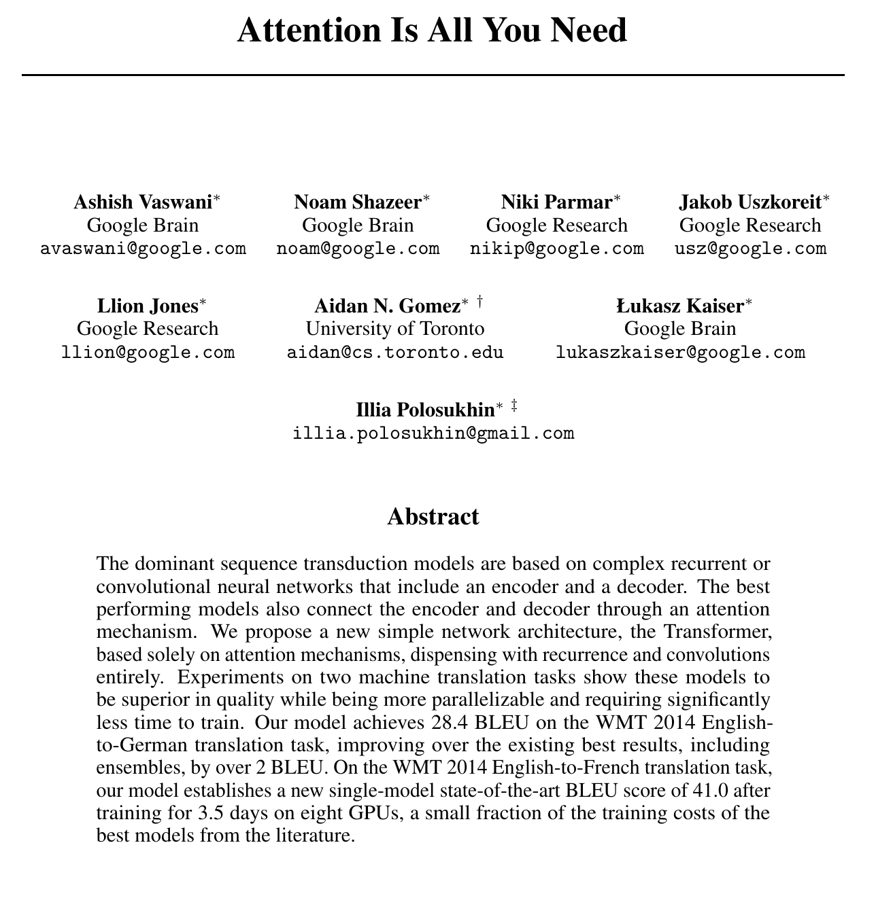
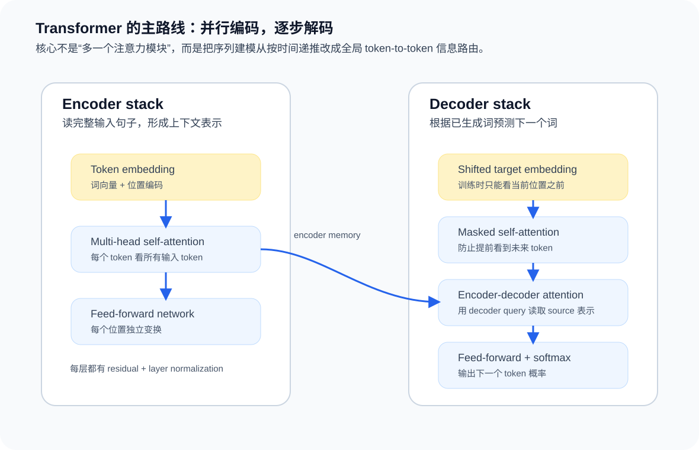
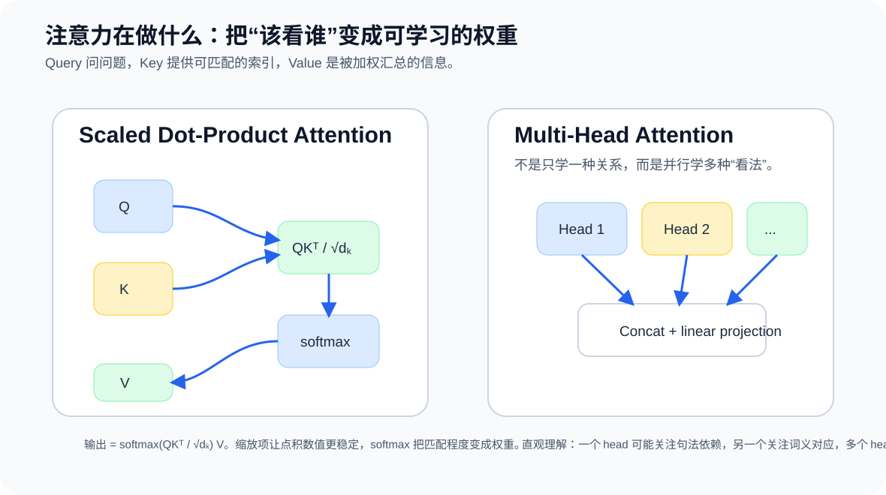
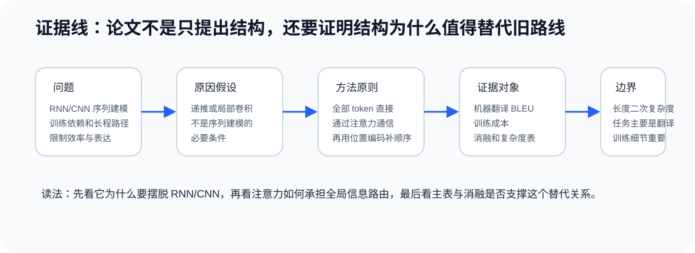

1. 论文身份和阅读目标
这是一篇架构范式论文。它不是把 attention 当成 RNN 外挂模块，而是把 attention 升级成整个序列模型的主干。
2. 摘要解读：它到底承诺了什么？

原文首页局部截图：标题、作者和摘要。这里保留摘要截图，是为了让读者先看到论文自己如何定义问题和贡献；下面的中文解释负责把摘要拆成问题、方法、证据和边界。
摘要首先描述当时的主流背景：序列转导模型主要依赖复杂的 recurrent 或 convolutional encoder-decoder，attention 通常只是连接 encoder 和 decoder 的机制。论文的转折点是：如果 attention 已经负责关键的信息选择，那么能不能让它直接成为主干？
作者的回答是 Transformer：一个只依赖 attention 的网络架构。它去掉 recurrence 和 convolution，让序列中的任意两个 token 可以通过 self-attention 直接建立联系。这个决定同时影响表示能力和训练效率，因为矩阵化 attention 比逐步 RNN 更容易并行。
摘要中的主证据来自 WMT 2014 机器翻译：论文报告 En-De 28.4 BLEU，En-Fr 41.8 BLEU，并强调训练成本明显降低。这里的重点不是单个分数，而是“质量、并行性、训练时间”三件事一起构成了 Transformer 的初始说服力。
摘要没有证明什么：它没有证明 attention-only 对所有任务都最优，也没有解决长序列二次复杂度，更没有直接解释后来大模型涌现出的全部能力。它证明的是：在当时机器翻译任务上，attention 可以从辅助机制变成主干范式。
3. 读这篇论文前需要知道什么
如果你之前不了解 NLP 或 Transformer，先把下面这些概念放进脑子里。它们不是背景装饰，而是读懂论文主张所必需的最低词汇表。
一个具体例子：假设输入是 “I love apples”，输出是 “Ich liebe Äpfel”。RNN 会按顺序读 I -> love -> apples；Transformer 会让每个 token 直接和其他 token 计算关系。生成德文词时，decoder 可以通过 cross-attention 去看英文中最相关的位置。
读论文时要盯住的问题：作者不是只想提高 BLEU，而是要证明“去掉递推和卷积之后，模型仍能学习序列关系，并且更容易并行训练”。
4. 一分钟路线图
旧问题RNN 递推难并行，CNN 依赖局部堆叠。
新原则让每个 token 直接看所有 token。
核心机制Scaled dot-product attention + multi-head attention。
补充机制位置编码、残差、LayerNorm、FFN。
证据翻译主结果、复杂度表、消融和解析任务。
如果只记一句话：Transformer 把“上下文如何传播”这个问题从时间递推改写为全局信息路由。
5. 方法结构：Transformer 为什么不是普通注意力模块？

Encoder 负责把输入序列中的每个 token 编成含上下文的信息表示。每层 encoder 有 multi-head self-attention 和 position-wise feed-forward network，外层配 residual connection 和 layer normalization。
Decoder 在生成目标序列时不能看到未来 token，所以先用 masked self-attention 处理已生成目标词，再用 encoder-decoder attention 读取源句子表示，最后用 feed-forward network 和 softmax 预测下一个 token。
这个结构的关键不是层数，而是所有主要上下文交换都由 attention 完成；位置顺序不再由递推或卷积隐含提供，而是由 positional encoding 显式注入。
6. 注意力机制：Q / K / V 到底在干什么？

Query 可以理解为“当前位置想找什么信息”，Key 是“每个位置提供的匹配索引”，Value 是“真正要被取走的信息”。QKᵀ 计算匹配程度，softmax 把匹配程度转成权重，然后用这些权重对 V 做加权汇总。
Attention(Q, K, V) = softmax(QK^T / sqrt(d_k)) V
Multi-head attention 的意义是并行学习多种关系。一个 head 可能偏向局部短语，另一个可能偏向长距离依赖，还有一个可能学习源词与目标词之间的对齐关系。多头不是装饰，而是让模型在多个子空间中分解复杂依赖。
8. 证据线：从问题到结论

问题：RNN/CNN 主干在长程依赖和并行训练上有结构瓶颈。
原因假设：序列建模不一定必须通过递推或局部卷积传播上下文。
方法原则：让 token 之间通过 self-attention 直接通信。
证明方式：机器翻译主结果 + 复杂度分析 + 消融 + parsing 泛化。
边界：任务主要是翻译；训练细节重要；长序列 attention 成本随长度平方增长。
9. 局限和隐藏假设
- 论文的主战场是机器翻译，不能把结论不加验证地扩展到所有任务。
- Self-attention 对序列长度有二次复杂度，这成为后续长序列 Transformer 的重要问题。
- 位置编码是显式补丁，因为去掉 recurrence/convolution 后模型不天然知道顺序。
- 性能收益不仅来自 architecture，也来自 optimizer、warmup、label smoothing、dropout 等训练 recipe。
- 论文的 head 可视化有启发性，但不能把所有 head 都解释成稳定的人类语义结构。
- 后续大模型能力不能完全回写为这篇论文本身已证明的 claim。
10. 新手最容易误解的点
误解 1：Attention 就是 Transformer
不是。Attention 是核心运算，但 Transformer 是一套完整架构：self-attention、cross-attention、position encoding、feed-forward、residual、normalization、masking 和训练 recipe 合在一起才形成可用系统。
误解 2：论文证明 RNN/CNN 永远没用了
不是。论文证明的是在当时机器翻译任务和设定下，attention-only 主干更有质量和效率优势。它没有证明所有序列、视觉、音频或小数据任务里 RNN/CNN 都应该被替代。
误解 3：Multi-head 的每个 head 都一定有明确语义
不一定。多头机制让模型有机会在不同子空间学习不同关系，但论文图示和后续可视化不能保证每个 head 都稳定对应一个人类可命名功能。
误解 4：BLEU 高就等于翻译完全好
不是。BLEU 是自动评价指标，适合快速比较系统，但它不能完整代表忠实性、流畅性和语义质量。读 Table 2 时应把 BLEU 当作当时主流 benchmark 证据，而不是全部质量真相。
11. 和其他论文的关系
这篇论文继承 encoder-decoder 和 attention，但改变了 attention 的地位。相对 RNN seq2seq，它去掉递推；相对 CNN seq2seq，它不靠局部卷积堆叠扩大感受野；相对早期 attention，它把 attention 从 encoder-decoder 桥梁扩展为 encoder 和 decoder 内部的主运算。
后续 Transformer 家族在预训练目标、位置编码、长序列建模、稀疏 attention、归一化、尺度规律和多模态迁移上继续扩展。读这篇论文时，最好把它看作“架构范式起点”，而不是后来所有大模型能力的完整解释。
12. Project Attachment：公开教程演示
Date: 2026-05-22
Current use: repository tutorial demonstration.
Why this paper matters here: 它适合作为 `sci-paper-reader` 的公开演示：论文熟悉、结构清楚、图表证据链完整，可以展示中文摘要解读、方法路线图、proof cards 和 visual HTML 的效果。
Evidence boundary: literature demonstration only. This page is not evidence for any private research project.